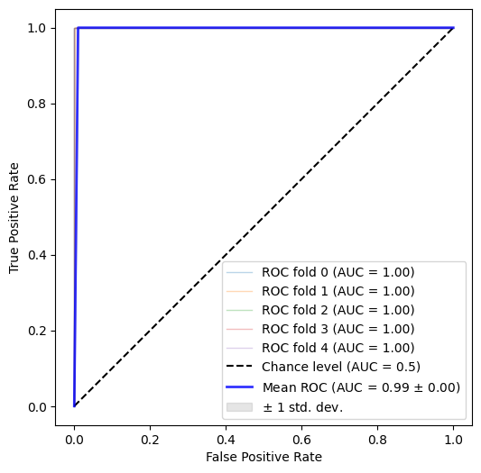
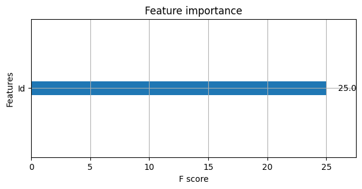
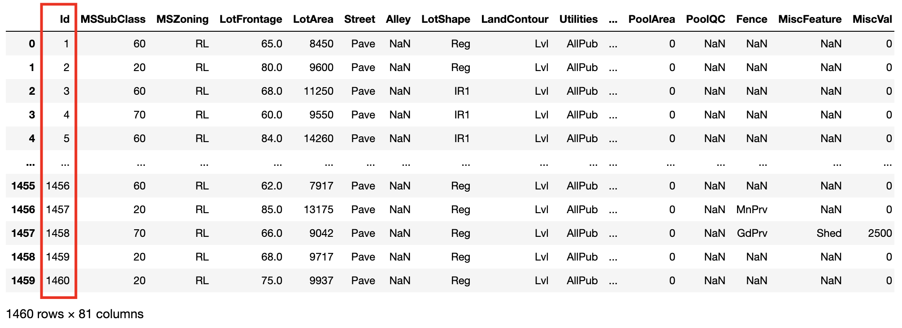
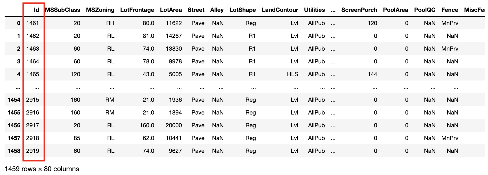
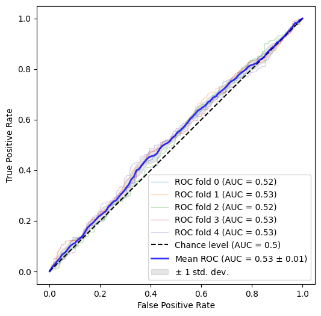
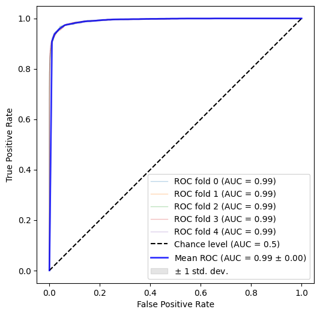
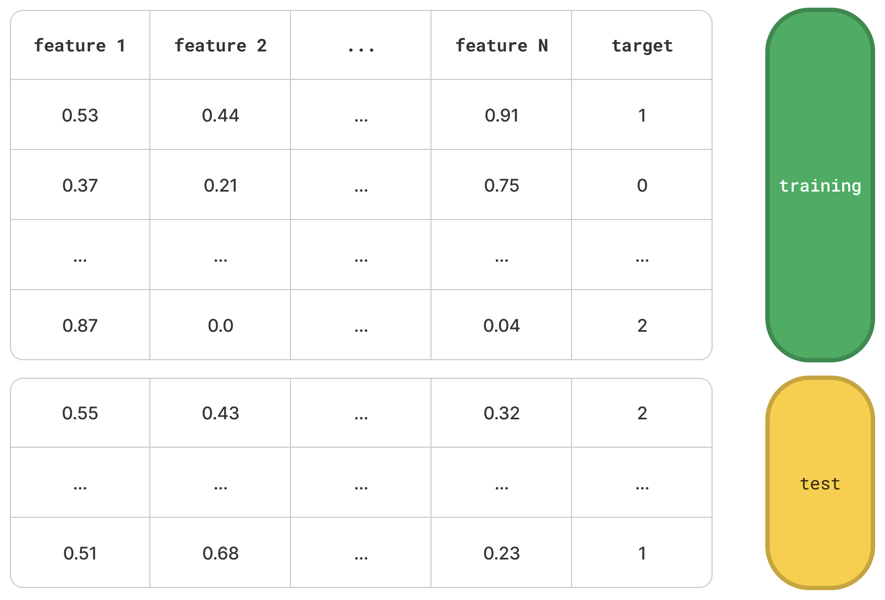
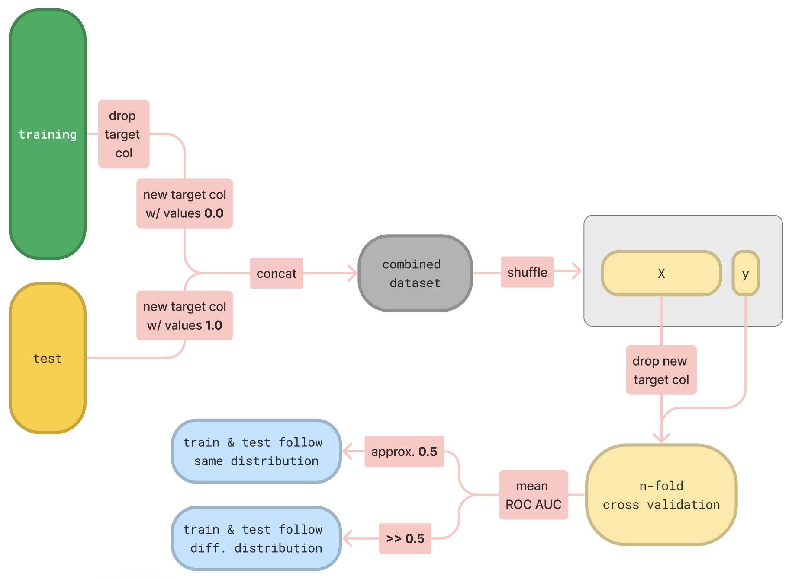

the problem
A common workflow in machine learning projects (especially in Kaggle competitions) is:
- train your ML model in a training dataset.
- tune and validate your ML model in a validation dataset (typically is a discrete fraction of the training dataset).
- finally, assess the actual generalization ability of your ML model in a “held-out” test dataset.
This strategy is widely accepted, as it forces the practitioner to interact with the ever important test dataset only once, at the end of the model selection process - and purely for performance assessment purposes. Any feedback derived from the evaluation on the test dataset does not influence the model selection process further, thus preventing overfitting.
However, the success of this strategy heavily relies on the following assumption:
“The training and test datasets are drawn from the same underlying distribution.”
This is often referred to as the “identically distributed” property in the literature, and - more importantly - it may not hold true.
It is probable for a test dataset to have a slightly different distribution than the training dataset. This introduces a logical fallacy in the step #2 of the workflow described above: the validation dataset (sharing the same distributional properties with the training dataset) is used to validate the model, which is - in this case - not a very good proxy for the performance on the unseen test instances.
In other words, you might end up with a very satisfactory model performance based the validation dataset, only to be disappointed by the actual performance of the model on the test dataset.
the solution
So, what can we do if the “identically distributed” property does not actually hold, but we are not aware of it?
Enter, adversarial validation.
It’s actually a flamboyant name for a simple, yet clever idea:
Let’s assume that the “identically distributed” property holds i.e. the training and test datasets are drawn from the same underlying distribution. In this case, if we were to train a binary classifier on the task of distinguishing instances that belong to the test dataset from those that belong to the training dataset, we would expect that this classifier would perform no better than random.
This “no better than random” performance can be easily quantified through the
Area Under the ROC metric. Such
a classifier (performing no better than random in this specific task) is bound to have an approximate 0.5 ROC AUC
score.
If, on the other hand, the “identically distributed” property does not hold, then the classifier will be able to
distinguish between training & test instances, so naturally a ROC AUC score significantly higher than 0.5 is expected.
Now, let’s see all these unfold in action:
examples
We will present two different use cases (straight out of Kaggle competitions) that vividly highlight the concept of adversarial validation: in the first one, the “identically distributed” property holds, while in the second one it does not.
data where the “identically distributed” property holds
The first use case is derived from the House Prices: Advanced Regression Techniques Kaggle competition.
train = pd.read_csv("train.csv")
test = pd.read_csv("test.csv")
We will filter-out all the non-numeric columns, just to keep things simple:
X_train = train.select_dtypes(include=np.number).copy()
X_test = test.select_dtypes(include=np.number).copy()
After a quick review of the training dataset and the competition description, we can identify the target variable,
which is the SalePrice column. Let’s drop it from the training dataset.
X_train = X_train.drop(["SalePrice"], axis=1)
Now, we can introduce a new artificial target variable in order to train a binary classifier that will try to distiguish between training and test instances.
# you can call this new target column whatever you like
X_train["_adval_label_"] = 0.0
X_test["_adval_label_"] = 1.0
In the remaining preprocessing steps, we will combine together the training and test datasets, shuffle them real good
and finally create a new design matrix X and a new target vector y:
combined_dataset = pd.concat([X_train, X_test], axis=0, ignore_index=True)
combined_dataset_shuffled = combined_dataset.sample(frac=1)
X = combined_dataset_shuffled.drop(["_adval_label_"], axis=1)
y = combined_dataset_shuffled["_adval_label_"]
Now, it’s time to train a classifier for this task:
n_splits = 5
classifier = xgb.XGBClassifier()
cv = StratifiedKFold(n_splits=n_splits)
...
The classifier of choice is the XGBoost classifier, for which we will use a typical stratified 5-fold cross-validation scheme. At each fold, we will calculate the ROC AUC score. At the end of this process, we get the following ROC AUC curve:

with individual per-fold scores:
>>> [1.0, 0.9982876712328766, 1.0, 1.0, 1.0]
Oops. It seems that our classifier - despite our strategy - managed to distinguish almost perfectly between training and test instances. Something is not right here. Let’s take a look at feature importance:
classifier = xgb.XGBClassifier(eval_metric='logloss')
classifier.fit(X, y)
fig, ax = plt.subplots(figsize=(12,4))
xgb.plot_importance(classifier, ax=ax)
plt.show();

Something nasty is happening with the Id column - let’s go back to the raw data:


It is apparent that our classifier can easily distinguish training from test instances via a very simple
heuristic: Id >= 1461. Totally different distributions between training & test datasets. So, let’s drop this column
and try again:

with individual per-fold scores:
>>> [0.5219787952711578,
0.5326398010883844,
0.5170529179958716,
0.5292620566710452,
0.5295862166360683]
Much better. This is the result we were looking for: our classifier has now lost the ability to distinguish between
training and test datasets yielding a mean ROC AUC score of 0.5148.
So, training & test datasets are really drawn from the same underlying distribution - assuming that the highly
problematicId column is not part of the design matrix.
data where the “identically distributed” property does not hold
The second use case is derived from the Sberbank Russian Housing Market Kaggle competition.
trainset = pd.read_csv("data/sberbank-russian-housing-market/train.csv")
testset = pd.read_csv("data/sberbank-russian-housing-market/test.csv")
Target variable here is price_doc:
X_train = trainset.drop(["price_doc"], axis=1)
Similarly to the Id situation of the previous example, here we have columns id and timestamp that we can drop from
the design matrix, since they are features with highly identifiable properties (having monotonically increasing values).
Then following roughly the same pre-processing logic and applying a 5-fold cross-validation scheme as previously, we get:

with individual per-fold scores:
>>> [0.9930616257454692,
0.9933295525996183,
0.993228891121216,
0.9927296013456716,
0.993396535221478]
Even with the absence of id and timestamp, our classifier was able to almost perfectly distinguish between training
and test instances. This implies significant difference in the underlying distributions of the two datasets, so using
a validation dataset to derive a proxy performance for the unseen test instances is bound to yield disappointment.
And now, the most important question of all.
is there any hope?
Is there anything we can do when out training and test datasets differ? Can we generate a reasonably good validation dataset that we can trust?
Intuitively, we cannot do something to “bring” the training dataset “closer” to the test dataset. Our best hope is to select the validation dataset (out of the training dataset) in a way that best resembles the test dataset i.e. select instances out of the training dataset which are most “similar” to the test dataset. This solution has been proposed by Zygmunt Zając (see related reading at the end).
This seems sensible - but how?
Our “adversarial” classifier can help us here, again. The plan is to:
- yield predictions for all training instances.
- see which training instances are misclassified as test instances.
- just use those to form the validation dataset.
Regarding step #1, a simple cross-validation scheme is a suitable approach to get predictions for all training instances.
Now onto step #2: we would like to get all the training instances that were misclassified with high probability i.e. the classifier mislabelled as test instances (although they were training ones) and it was quite certain about it.
predictions = []
for fold, (train, test) in tqdm([*enumerate(cv.split(X, y))]):
classifier.fit(X.iloc[train], y.iloc[train])
y_pred = classifier.predict_proba(X.iloc[test])[:, 1]
predictions.extend(y_pred.tolist())
combined_dataset["preds"] = predictions
trainset = combined_dataset[combined_dataset["_adval_label_"] == 0.0]
i = trainset["preds"].argsort()
sorted_trainset = trainset.iloc[i]
That’s about it: sorted_trainset contains all the training instances, sorted from lowest to highest probability of
instance being a test instance. “Slicing” from the bottom of the table will get you the training instances that are
intuitively more similar to the test dataset, thus good candidates for the validation dataset.
For example:
trainset[trainset["preds"] >= 0.5]
yields the few misclassified training instances.
a birds-eye view
To wrap all these up, let’s take a step back and look at the adversarial validation mechanism again - this time in a bit more abstract way.

Let’s imagine some typical training and test datasets, described by N numerical features and a target variable. The following flowchart acts as a visual representation of the adversarial validation mechanism.

as a Python package
Based on the generality of the adversarial validation mechanism above, i searched Github.com for
a pip that implements this as a Python package. I didn’t find anything worth considering, so i decided to develop and
publish one!
I named it advertion, which stands for adversarial validation):
https://github.com/ilias-ant/adversarial-validation
conclusion
We went through the concept of adversarial validation, a simple technique that helps you assert whether training & test instances follow the same underlying distribution through a classification scheme: membership in test dataset is used as a binary target variable upon which a classifier tries to distinguish between the two, trained on a combined, shuffled dataset.
We then saw two practical examples from Kaggle competitions, covering both cases. In the first example, we saw that the classifier could not distinguish between training & test instances, thus training & test datasets must have the same distributions. In the second example, we saw quite the opposite.
After that, we tried to answer the most crucial question: what can we do in case our datasets differ? and provided a simple solution.
Lastly, wrapped up the article with a birds-eye view on the adversarial validation mechanism and highlighted an open-source Python package that basically offers this validation through a simple API.
related reading
The following are, to the best of my knowledge, the first mention of the adversarial validation concept and the proposed solution - definitely a good read:
W.r.t. code:
- Code for the examples above: https://github.com/ilias-ant/adversarial-validation-demo
- The open-source Python package: https://github.com/ilias-ant/adversarial-validation
- The documentation for the package: https://advertion.readthedocs.io/en/latest/